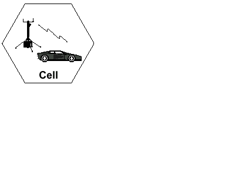
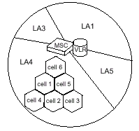
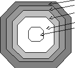
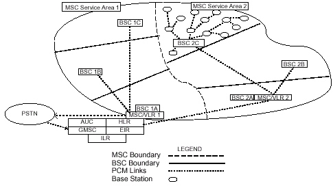
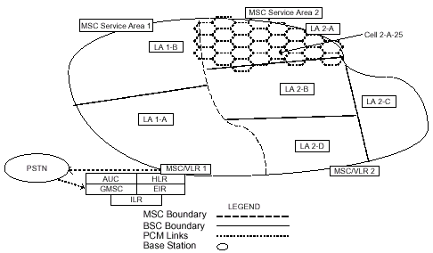
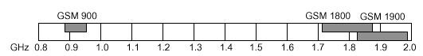
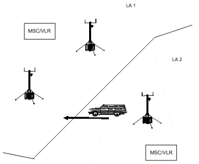
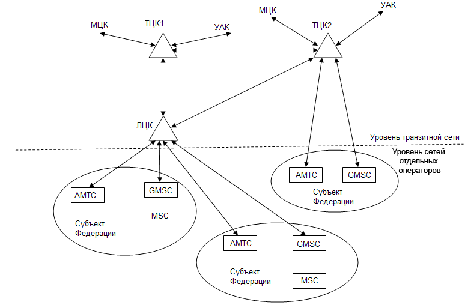

Каждая телефонная сеть нуждается в определенной структуре для маршрутизации вызовов к требуемой станции и далее к абоненту. В сети мобильной связи эта структура особенно важна, так как абоненты перемещаются по сети, то есть меняют свое местоположение и это местоположение должно постоянно отслеживаться [4-6].
Сота является базовым элементом сотовой системы и определяется как область радиопокрытия, обеспечиваемого одной антенной одной базовой станции (рис.1.8). Каждой соте назначается свой уникальной номер, называемый Глобальным идентификатором соты (CGI). В сети, охватывающей, например, целую страну, число сот может быть очень большим.

Рис.1.8. Сотовая ячейка
Зона местоположения (LA) определяется как группа сот. Местоположение абонента в пределах сети связано с той LA, в которой в данный момент находится абонент. Идентификатор данной LA хранится в VLR.
Когда MS пересекает границу между двумя сотами, принадлежащими различным LA, она передает в сеть информацию о новой LA. Это происходит только в том случае, если MS находится в режиме «Свободно» (Idle). Информация о новом местоположении не передается в течение установленного соединения, этот процесс будет происходить после освобождения соединения. Если MS пересекает границу между сотами в пределах одной LA, она не сообщает сети о своем новом местоположении. При поступлении входящего вызова к MS пейджинговое сообщение распространяется в пределах всех сот, принадлежащих одной LA.
Зона обслуживания MSC (SA)состоит из некоторого числа LA и отображает географическую часть сети, находящуюся под управлением одного MSC (рис.1.9). Для того, чтобы направить вызов к MS информация о зоне обслуживания MSC также необходима, поэтому зона обслуживания также отслеживается и информация о ней записывается в базе данных (HLR).

Рис.1.9 Зона обслуживания MSC
Зона обслуживания PLMN. Представляет собой совокупность сот, обслуживаемых одним оператором и определяется как зона, в которой оператор обеспечивает абоненту радиопокрытие и доступ к своей сети. В любой стране может быть несколько зон обслуживания PLMN, по одной на каждого оператора. Определение роуминг употребляется в случае перемещения MS из одной области обслуживания PLMN в другую. На рис.1.10 представлены соотношения между различными областями обслуживания.
Зона обслуживания GSM
Зона обслуживания PLMN
Зона обслуживания (SA) MSC
Зона местоположения (LA)
Зона обслуживания Соты
Рис.1.10 Иерархическая взаимосвязь между зонами GSM
Зона обслуживания GSM. Представляет собой всю географическую область, в которой абонент может получить доступ к сети GSM. Зона обслуживания GSM увеличивается по мере того, как новые операторы подписывают контракты, предусматривающие совместную работу по обслуживанию абонентов. В настоящее время зона обслуживания GSM охватывает с некоторыми промежутками многие страны от Ирландии до Австралии и от Южной Африки до Америки. Международный роуминг – это термин, который применяется в том случае, когда MS перемещается от одной национальной PLMN в другую национальную PLMN.
На рис.1.11. и 1.12. представлены различные точки зрения на одну и туже сеть. Первый отражает расположения узлов сети и их взаимодействие на уровне аппаратного обеспечения, а второй отражает географическую структуру сети на уровне программного обеспечения.

Рис.1.11. Расположение узлов сети и их взаимодействие на уровне аппаратного обеспечения

Рис.1.12. Расположение узлов сети и их взаимодействие на уровне программного обеспечения
Частотный диапазон GSM включает в себя три диапазона частот: 900, 1800, 1900 МГц. (рис.1.13).
Диапазон 900 МГц

Рис.1.13. Частотные диапазоны GSM
Изначально под стандарт GSM был выделен диапазон 900 МГц. В настоящее время данный диапазон остаётся всемирным. В некоторых странах используются расширенные диапазоны частот, обеспечивающие большую ёмкость сети. Расширенные диапазоны частот называются E-GSM и R-GSM, в то время как обычный диапазон носит название P-GSM (primary).
P-GSM900 890-915/915-960 MHz
E-GSM900 880-915/925-960 MHz
R-GSM900 890-920/915-970 MHz
Диапазон 1800 МГц
В 1990 г. для увеличения конкуренции между операторами, UnitedKingdom начали развивать новую версию GSM, которая адаптирована к диапазону частот 1800. Сразу после утверждения данного диапазона несколько стран сделали заявку на использование данного диапазона частот. Введение данного диапазона увеличило рост количества операторов, приводя к увеличению конкуренции и, соответственно, улучшению качества обслуживания. Применение данного диапазона позволяет увеличивать емкость сети за счёт увеличения полосы пропускания и, соответственно, увеличение несущих. Диапазон частот 1800 использует следующие пары дуплексных частот: GSM 1710-1805/1785-1880 MHz.
До 1997 года стандарт 1800 носил название Digital Cellular System (DCS) 1800 MHz, в настоящее время носит название GSM 1800.
Диапазон 1900 МГц
В 1995 году в США была специфицирована концепция PCS (Персональные услуги связи). Основной идеей этой концепции является возможность предоставления персональной связи, то есть связи между двумя абонентами, а не между двумя мобильными станциями. PCS не требует, чтобы эти услуги были реализованы на основе сотовой технологии, но в настоящее время эта технология признана наиболее эффективной для данной концепции. Частоты, доступные для реализации PCS, находятся в области 1900 МГц. Поскольку в Северной Америке стандарт GSM 900 не может быть использован из-за того, что эта полоса частот занята другим стандартом, стандарт GSM 1900 является возможностью заполнения этого пробела. Основным различием между американским стандартом GSM 1900 и GSM 900 является то, что GSM 1900 поддерживает сигнализацию ANSI.
Диапазон GSM 800
Традиционно полоса 800 МГц была занята распространенным в США стандартом TDMA (AMPS и D-AMPS). Как и в случае со стандартом GSM 1800 этот стандарт дает возможность получения дополнительных лицензий, то есть расширяет область работы стандарта на национальных сетях предоставляя операторам дополнительную емкость.
В табл.1.3 снесены сравнительные данные различных частотных диапазонов.
Таблица 1.3.
Диапазоны частот
Передача |
Диапазоны частот |
||||
|
P-GSM 900 |
E-GSM 900 |
R-GSM 900 |
GSM 1800 |
GSM 1900 |
|
|
Uplink |
890 – 915 МГц |
880 - 915 МГц |
890 – 925 МГц |
1710 – 1785 МГц |
1850 – 1910 МГц |
|
Downlink |
935 – 960 МГц |
925 - 960 МГц |
935 – 970 МГц |
1805 – 1880 МГц |
1930 – 1990 МГц |
Состояния мобильной станции. В процессе развития мобильных систем был разработан ряд понятий, описывающих различные состояния мобильной станции.
Мобильная станция может иметь несколько состояний.
Idle («Свободно»): MS включена, но разговор не установлен;
Active («Активный режим»): MS включена, режим установленного соединения;
Detached: MS выключена
Implicit Detach: MS не выходила на связь продолжительное время.
В табл.1.4 приводятся ключевые понятия, которые помогают описать GSM режимы обслуживания трафика.
Регистрация МС и роуминг представлена на рисунке1.14.
Таблица1.4.
Состояния мобильной станции
|
Состояние |
Термин |
Определение |
IDLE |
Регистрация (Registration) |
Процесс, когда MS сообщает системе о ее включении |
|
Роуминг (Roaming) |
Режим, когда MS двигается по всей сети в свободном режиме |
|
|
Интернациональный роуминг (International Roaming) |
Режим, когда MS уезжает в зону действия других операторов. MS будет в роуминге тогда, когда с другим оператором достигнуто роуминговское соглашение |
|
|
Location Updating |
MS сообщает системе о том, что она вошла в новую LA |
|
|
Paging |
Процесс, когда MS вызывается системой, т.е. когда MS получает вызывное сообщение с идентификационным номером MS |
|
|
ACTIVE |
Handover |
Процесс эстафетной передачи, при движении MS через несколько сот |

Рис.1.14. Роуминг
Когда MS выключается, в системе мобильная станция отмечается как Detach. Когда MS включается, она начинает сканировать весь частотный GSM диапазон, используя при этом специальные каналы управления. После того как MS находит каналы, она начинает измерять уровни сигнала на этих каналах, после чего эти данные запоминаются в MS. После того, как каналы были измерены, МС выбирает наилучший канал.
После того как MS включилась, она должна зарегистрироваться в системе, после чего система помечает её как мобильную станцию в состоянии IDLE. Если оказывается, что MS находится в другой LA, то MS осуществляет процедуру обновления своего местоположения.
В процессе движения по сети MS постоянно сканирует каналы для определения канала с наибольшим уровнем сигнала. Если MS находит лучшую частоту, она перестраивается на неё. Если новая частота принадлежит новой LA, то система также оповещает об этом MS.
Принцип иерархии федеральной сети общего пользования GSM. Федеральная сеть GSM представляет иерархическую структуру, принцип построения которой приведен на рис.1.15.

Рис.1.15 Принцип иерархии федеральной сети общего пользования GSM
Первый уровень включает мобильные центры коммутации MSC, шлюз мобильного центра коммутации. Взаимодействие сети GSM со стационарной сетью ТфОП осуществляется через шлюз мобильного центра коммутации GMSC подключением к АМТС (основной вариант) и к АТС при значительном тяготении нагрузки абонентов на местном уровне. Второй уровень иерархии GSM- транзитная сеть, представляющая собой транзитные центры коммутации (ТЦК), выполняющие для мобильных абонентов те же функции, что и УАК для ТфОП. Все ТЦК соединены между собой по полносвязной схеме. При взаимодействии федеральной сети GSM с фиксированной сетью ТфОП на международном уровне возможны соединения мобильной станции MS с телефонным аппаратом (ТА) стационарной сети ТфОП:
MS – MSC – GMSC - ТЦК – УАК – АМТС – АТС – ТА
Кроме ТЦК уровень транзитной сети может включать также локальные центры коммутации (ЛЦК). ЛЦК является промежуточным уровнем иерархии федеральной сети GSM. ЛЦК является узлом доступа к транзитной сети и соединяется не менее чем с двумя ТЦК. В этом случае взаимодействие мобильной станции и стационарного телефонного абонента при междугородней связи осуществляется по схеме:
MS – MSC – GMSC - ЛЦК – ТЦК - УАК – АМТС – АТС – ТА